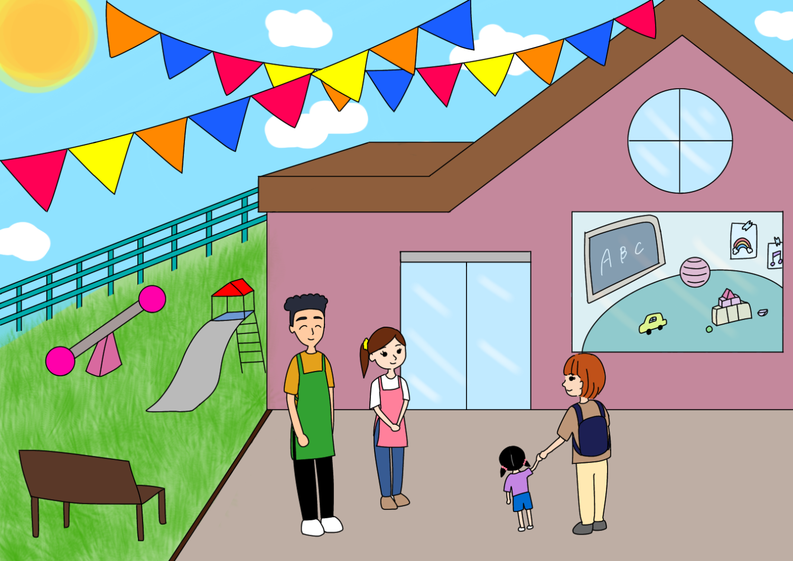

The Importance of a Child Development Center (CDC) on Campus
Image Credits https://eccunion.com/uncategorized/2023/06/08/support-parenting-community-needs-for-child-care-on-campus/
A Solution to El Camino College's Parenting Community Needs
It was the first day of my freshman year at El Camino College when I met Jenny. She was sitting on a bench outside of the library, looking overwhelmed and exhausted. I sat down next to her, and we started chatting. She told me about the challenges of being a single mother and a full-time student. She wanted to excel at school, but she didn't have anyone to take care of her toddler while she was in class.
Jenny's story is not unique. Many parent students at El Camino College face similar challenges. According to a survey conducted by the college, 60% of parent students reported that they have skipped classes or dropped out of a course due to childcare issues.
The lack of affordable and accessible childcare options on campus is not only a hindrance to parent students' academic success, but it also poses a significant challenge to early childhood education students who lack access to a laboratory school for on-site training.
So, what is the solution? The answer is simple - the college needs to reopen its Child Development Center (CDC).
the Need for a CDC on Campus
The need for a CDC is not just a theoretical idea - it is supported by hard data and quantifiable examples:
- 60% of parent students have skipped classes or dropped out of a course due to childcare issues.
- 20% of parent students report that they have had to bring their child to class because they had nobody to take care of them.
- Early childhood education students lack access to an on-site laboratory school, which is a required element of their degree program.
- The closure of the CDC in 2017 resulted in the loss of 26 jobs in the community.
The Benefits of a CDC on Campus
Reopening the CDC will have numerous benefits for both parent students and early childhood education students.
- Improving Academic Success: Parent students will have access to affordable and reliable childcare, which will allow them to attend classes and focus on their studies, leading to improved academic success and higher graduation rates.
- Providing On-Site Training: Early childhood education students will have access to a laboratory school on campus, which is a required element of their degree program. This will provide them with valuable on-site training, helping them to become more qualified professionals in the field of early childhood education.
- Stimulating Local Economy: The reopening of the CDC will create jobs and stimulate the local economy. In 2017, the closure of the CDC resulted in the loss of 26 jobs in the community. Reopening the center will bring these jobs back and even create new ones.
and Case Studies
The struggles of parent students at El Camino College are real. Here are some personal anecdotes and case studies that illustrate the challenges they face:
"I am a single parent of two children who has returned to school for a better life. I work, attend school, and care for my children with no help whatsoever. I can't afford to pay for childcare, so I am struggling to juggle it all. There have been many times when I have had to miss a class or not been able to finish my assignments because I had to take care of my kids. If there was a CDC on campus, my life would be much easier." - Ashley, Parent Student
"As part of my degree program in early childhood education, I am required to complete on-site training in a laboratory school. However, there is no on-campus laboratory school, which means I have to travel to another city to complete this requirement. This adds an extra financial burden on me, and it's just not practical. If there was a CDC on campus, it would allow me to complete my training on-site and save me time and money." - Sarah, Early Childhood Education Student
Practical Tips
If you are a parent student or an early childhood education student at El Camino College, here are some practical tips to help you manage your childcare needs:
- Explore off-campus childcare options such as local daycare centers and in-home providers.
- Check if you are eligible for childcare assistance through government programs such as CalWORKs and CalFresh.
- Form a support system with other parent students in your classes to help each other with childcare needs.
Conclusion
The reopening of El Camino College's Child Development Center is essential to meet the needs of the parenting community on campus. The lack of affordable and accessible childcare options is hindering parent students' academic success and putting a strain on early childhood education students who lack access to an on-site laboratory school. Reopening the CDC will not only improve academic success and provide valuable on-site training, but it will also stimulate the local economy. It's time for El Camino College to recognize the importance of a CDC on campus and take action to reopen it.
Curated by Team Akash.Mittal.Blog
Share on Twitter Share on LinkedIn